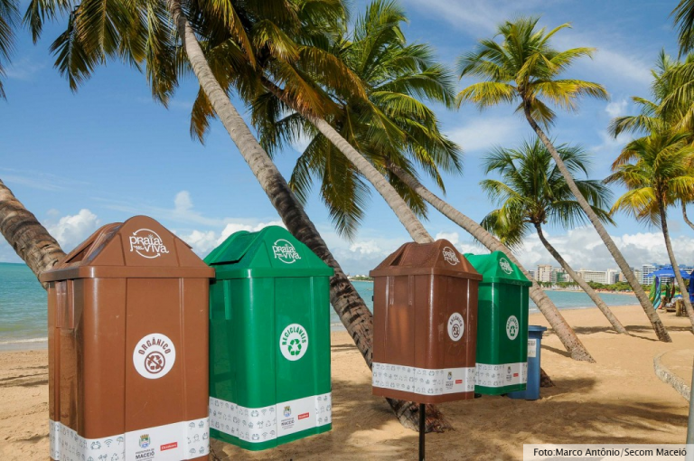

Poluição marinha é um grave problema ambiental causado principalmente pela ação antrópica. Resulta na degradação de ecossistemas marinhos e em prejuízos para a saúde humana.

Poluição marinha é a introdução voluntária ou involuntária de materiais de diferentes naturezas na água dos mares e oceanos de todo o mundo, tendo como principal agente causador o ser humano. Ações humanas como o descarte irregular de lixo e de dejetos urbanos, os resíduos de atividades econômicas e o derramamento de petróleo provocam a poluição marinha. Nota-se, ainda, que no último século a elevação das temperaturas do planeta tem afetado negativamente os oceanos.Elementos como plástico, petróleo, resíduos químicos e esgoto são algumas das fontes da poluição marinha em todo o mundo. Sua presença na água do mar é extremamente prejudicial para a biodiversidade marinha, afetando a manutenção dos ecossistemas oceânicos e podendo chegar até os seres humanos por meio das cadeias alimentares.Por conta dos efeitos nocivos da poluição marinha, a solução para esse grave problema ambiental demanda urgência e deve envolver a ação de todos os agentes da sociedade: desde governos e agentes econômicos até a população.
Possíveis soluções para a poluição marinha
A poluição marinha é um problema que demanda soluções urgentes para a redução do seu impacto nocivo em médio e longo prazo. A conscientização dos governantes e da população acerca da importância dos mares e oceanos somente isso não é suficiente.
Veja algumas medidas que podem ser postas em prática para tentar solucionar o problema da poluição marinha:
- Ampliação das redes de saneamento básico nas cidades e no campo, incluindo sistemas de tratamento de esgoto e de coleta de lixo.
- Proibição do descarte de materiais e rejeitos tóxicos nos mananciais e no mar, com multa para aqueles que o fizerem.
- Proibição do descarte de lixo em praias e estuários, com fiscalização constante desses ambientes e aplicação de medidas contra os indivíduos que descumprirem as regras.